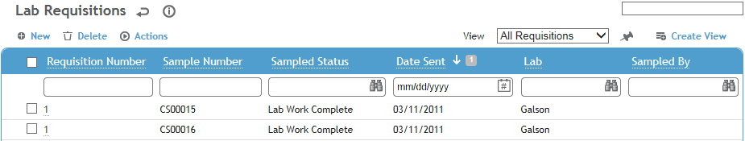
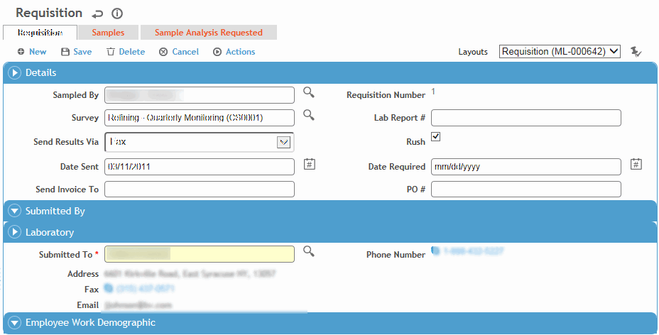

In the Industrial Hygiene menu, click Lab Requisition.

Click New to add a request.

If you want to filter the samples available to choose from, select the name of the person who collected the sample (in the Sampled By field) and/or the Survey.
In the Laboratory section, select the laboratory the sample will be Submitted To.
On the Samples tab, click the “add” shortcut icon  to select the samples to be analyzed (see Adding New Records).
to select the samples to be analyzed (see Adding New Records).
The samples list will only display samples with sample status “Send to Lab” for the laboratory identified on the requisition. You may further filter the sample list by populating the Sampled By and/or the Survey field on the requisition.
To remove a sample, select the checkbox beside it and click Delete. If a sample is removed from a requisition, the sample status is changed to Incomplete.
Enter information in the rest of the fields to complete the form.
The Sample Analysis Requested tab shows all the samples on the requisition with their analytes and the analytical methods that should be used.
Click Save.
To send the requisition via email, choose Actions»Email Requisition. The To field defaults to the email for the lab on the record but can be edited. The CC field opens the employee list. The requisition is attached in XML format. The date that the email was sent is recorded in the lab requisition record.